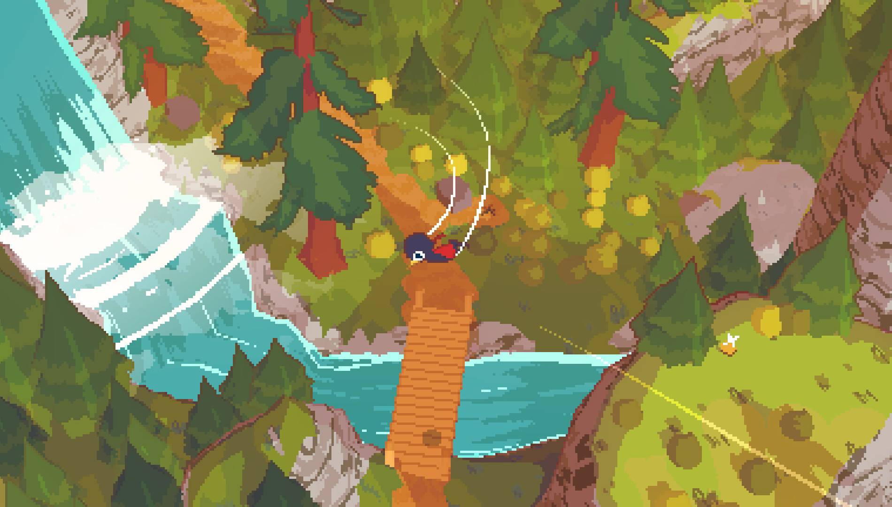
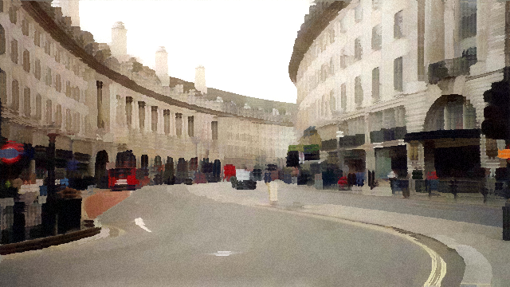

¿Por qué rayos quería hacer esto?
Un día buscando inspiración para crear nuevos juegos vi este juego que se llama A Short Hike y me dejó muy marcado su arte. Es un mundo 3D pero con un shader pixelado encima y dije: WOW ¿qué es esto? ¿cómo se hace? y me puse a investigar.
Los únicos shaders que conocía eran los de Minecraft, que para la mayoría de gente es una forma de modificar Minecraft para que tenga efectos visuales generalmente de realismo en el juego, aunque también hay otros que tienen otros efectos que no son necesariamente realistas.
Entonces investigando descubrí la biblia de los shaders (por lo menos para mí), The Book of Shaders de Patricio Gonzalez Vivo y Jen Lowe, que fue mi principal guía para aprender. Me puse a pensar: ¿qué estilo artístico sería interesante ver en un videojuego? Y ahí es donde se me ocurrió imitar a Claude Monet.
Cuando pequeño mis padres compraron unas revistas de pintores que venían en el diario y una de esas era de Monet. Quedé muy fascinado con su arte y por eso lo elegí a él y no a otro estilo.

Antes del código, las pinturas.
Lo primero que noté en las pinturas de Monet fueron los reflejos del agua en Bathers at La Grenouillère. Son muy bonitos. La manera en que puede dibujar personas en tan pocos trazos es genial.

Otra cosa que noté interesante es la forma en la que Monet dibuja las nubes. Estas cosas sí o sí deben estar en el videojuego.

Mi primer shader era un rectángulo azul.
Mi primera experiencia programando en shaders (GLSL) fue en thebookofshaders.com. El "Hola Mundo" se veía algo así:
#ifdef GL_ES
precision mediump float;
#endif
uniform float u_time;
void main() {
gl_FragColor = vec4(1.0, 0.0, 1.0, 1.0);
}
Este script pinta todos los píxeles del objeto con un color sólido. Puedes ejecutar este script en shadertoy.com, que es un visualizador GLSL.
Aprendiendo en el libro de shaders me encontré con mucha matemática avanzada que tuve que estudiar. Sentí que por fin algo funcionó cuando logré hacer una animación de un gradiente de rojo a negro utilizando la función seno sobre el tiempo para que devuelva valores de 0 a 1 suavemente y así disminuir y aumentar la cantidad de rojo en la imagen.
Definitivamente lo más confuso fue cuando empezamos a usar matrices en GLSL. Me hubiera ayudado haber prestado atención en clases jajaja. (bait)
El Kuwahara filter, o cómo pintar sin pintar.
El filtro Kuwahara suaviza áreas uniformes sin destruir bordes. Para cada píxel sigue 4 pasos:
1. Mira un cuadrado alrededor de ese punto.
2. Divide ese cuadrado en 4 partes.
3. Observa cuál de esas partes es más "uniforme" (más parecida entre sí).
4. Elige esa parte y usa su color promedio.
Este algoritmo nos ayuda a transformar una imagen cualquiera a algo parecido a los cuadros de Monet, porque copia cómo simplifica el ojo humano una escena. No solo cómo se ve una foto. La pintura impresionista es precisamente eso: simplificación controlada.
Este es el código final para Shadertoy:
#define KERNEL_SIZE 5
#define VIBRATION 0.04
#define BLOOM_STRENGTH 0.15
void mainImage(out vec4 fragColor, in vec2 fragCoord)
{
vec2 uv = fragCoord / iResolution.xy;
vec2 texel = 1.0 / iResolution.xy;
float n = float((KERNEL_SIZE + 1) * (KERNEL_SIZE + 1));
vec3 mean[4];
vec3 sigma[4];
for (int k = 0; k < 4; k++) {
mean[k] = vec3(0.0);
sigma[k] = vec3(0.0);
}
// Cuadrante 0
for (int j = -KERNEL_SIZE; j <= 0; j++)
for (int i = -KERNEL_SIZE; i <= 0; i++) {
vec3 c = texture(iChannel0, uv + vec2(float(i), float(j)) * texel).rgb;
mean[0] += c; sigma[0] += c * c;
}
// Cuadrante 1
for (int j = -KERNEL_SIZE; j <= 0; j++)
for (int i = 0; i <= KERNEL_SIZE; i++) {
vec3 c = texture(iChannel0, uv + vec2(float(i), float(j)) * texel).rgb;
mean[1] += c; sigma[1] += c * c;
}
// Cuadrante 2
for (int j = 0; j <= KERNEL_SIZE; j++)
for (int i = -KERNEL_SIZE; i <= 0; i++) {
vec3 c = texture(iChannel0, uv + vec2(float(i), float(j)) * texel).rgb;
mean[2] += c; sigma[2] += c * c;
}
// Cuadrante 3
for (int j = 0; j <= KERNEL_SIZE; j++)
for (int i = 0; i <= KERNEL_SIZE; i++) {
vec3 c = texture(iChannel0, uv + vec2(float(i), float(j)) * texel).rgb;
mean[3] += c; sigma[3] += c * c;
}
float min_sigma = 1e8;
vec3 result = vec3(0.0);
for (int k = 0; k < 4; k++) {
mean[k] /= n;
vec3 s = abs(sigma[k] / n - mean[k] * mean[k]);
float val = s.x + s.y + s.z;
if (val < min_sigma) { min_sigma = val; result = mean[k]; }
}
// Ruido tipo vibración
vec2 noiseUV = uv * iResolution.xy * 0.8;
float noise = fract(sin(dot(noiseUV, vec2(12.9898, 78.233))) * 43758.5453);
noise = noise * 2.0 - 1.0;
result += noise * VIBRATION;
// Bloom simple
vec3 bloom = vec3(0.0);
float samples = 0.0;
for (float bj = -3.0; bj <= 3.0; bj++)
for (float bi = -3.0; bi <= 3.0; bi++) {
vec2 offset = vec2(bi, bj) * texel * 4.0;
vec3 s = texture(iChannel0, uv + offset).rgb;
float b = dot(s, vec3(0.299, 0.587, 0.114));
bloom += s * smoothstep(0.6, 1.0, b);
samples += 1.0;
}
bloom /= samples;
result += bloom * BLOOM_STRENGTH;
fragColor = vec4(result, 1.0);
}


Vibración de color y un poco de bloom.
El estilo Kuwahara no era suficiente porque solo simplifica y suaviza colores. No agrega textura, dirección de pincelada ni irregularidad natural. Reduce detalle, pero no introduce gesto ni energía visual. El resultado se veía como una foto filtrada, no como una pintura real.
Además a esto agregamos un poquito de ruido estático a cada píxel:
// Vibración de color — noise estático por píxel
vec2 noiseUV = fragCoord * 0.8;
float noise = fract(sin(dot(noiseUV, vec2(12.9898, 78.233))) * 43758.5453);
noise = noise * 2.0 - 1.0;
float vibration = 0.04;
result += noise * vibration;
¿Qué hace este ruido y por qué funciona?
Kuwahara suaviza mucho. Eso puede hacer que todo se vea plano y artificial. El ruido introduce micro-variaciones, como el grano de la pintura.
Portarlo a Godot fue más fácil de lo esperado.
Las principales diferencias entre Godot y GLSL puro (para Shadertoy) son:
GDShader (Godot)
Se integra al motor Godot · Tiene variables propias (SCREEN_UV, COLOR, etc.) · Funciona dentro del pipeline del engine · Más práctico para juegos
ShaderToy (GLSL)
Es GLSL casi puro · Usa mainImage, iResolution, iChannel0 · Es más experimental · Ideal para prototipos y efectos visuales
Con esta estructura de escena y un mundo 3D de ejemplo logramos tener el shader funcionando en tiempo real.

Aprendí a hacer shaders. Y otras cosas.
Después de pasar por esto y aprender que se puede hacer bastante arte con matemáticas, mi forma de ver el mundo cambió.
Ahora sigue tratar de hacer un juego con esto, a ver si termino construyendo algo bonito.
Quería un filtro impresionista. Terminé aprendiendo a mirar la luz.